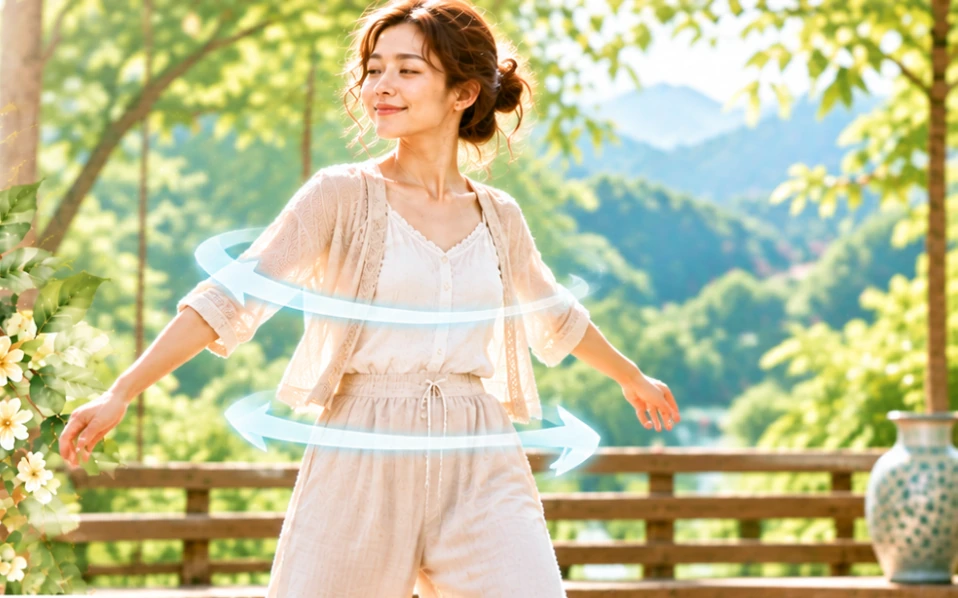

還記得小時候的童玩—「波浪鼓」嗎？它其實是一個長的相當瘦小的鼓，大部分都是圓形的，鼓的左右兩邊會用繩子綁著兩顆小珠，玩的時候只要拿在手上轉動，兩邊的小珠會先向外飛去，之後再往回撞擊鼓面，進而發出咚咚咚的聲音。所以它不只是玩具，也是樂器。
我們今天要介紹的動作，看起來就有點像是小朋友在玩波浪鼓一樣，因為古人以「乾」為首為天，以「坤」為腹為地，而這個動作是利用身體擺動的方式來拍打腹部，所以也被稱之為「轉地鼓」。
它的動作相當簡單，首先是身體要放鬆站直，雙腳距離與肩同寬，再利用身體和雙手的擺動即可，當身體轉向左邊時，右手自然往前輕拍小腹肚臍的位置，而左手同時自然向後拍打命門的位置，當身體轉向右邊時，左手自然往前輕拍小腹肚臍的位置，而右手同時自然向後拍打命門的位置。
命門的位於脊柱上，肚臍的後方正對位置，是人體生命的健康之門，屬於重要的長壽穴位之一，常做「轉地鼓」這個動作可以強身固腎。
要注意的是，拍打的時候力道不宜過大，以自然轉動為主，何謂自然轉動？就是拍打的力度，以身體轉動時，自然產生的為主，節奏則是以自己喜歡、能夠掌控為最重要，時間以每次一分鐘為原則，次數則是不限，從三七二十一下，到七七四十九下都可以。
事實上，不只是久坐而已，只要是長時間持續進行的行為，中醫都認為是不利養生的危險因子，像是「耳不久聽，目不久視，坐不至疲，臥不至倦」⋯等，甚至進一步地指出這些行為可能對身體造成的危害，如「久視傷血，久臥傷氣，久立傷骨，久行傷筋，久坐傷肉」，這些呼籲之所以不斷地被提出來，無非是希望大家都能夠了解，想要做好養生的話，日常生活習慣的改變，往往是最簡單也是最有效的方式。
所以千萬不要長時間的看手機、平板或是電腦，因為這樣的行為不只是久坐，而且久視，對身體的傷害也會是雙重的，每個小時都保持十到十五分鐘的休息和活動，就可以將可能的傷害降到最低。
有一天佛印禪師與蘇東坡同遊一座寺院，蘇東坡來到觀音菩薩的像前，看到觀音手持念珠便突然問道：「觀世音菩薩在念什麼？」
佛印禪師回答：「念觀世音菩薩。」
蘇東坡不解地追問著：「為何她也要念觀世音菩薩？」
佛印禪師：「求人不如求己。」
屁股還黏在椅子上嗎？該是時候起來動一動了，試試人體波浪鼓吧！